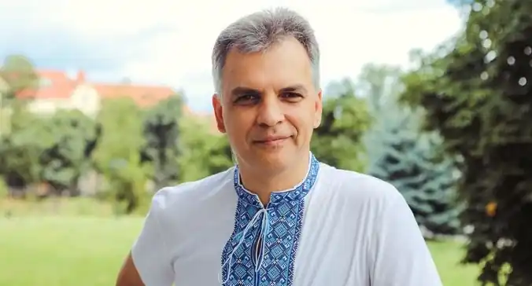
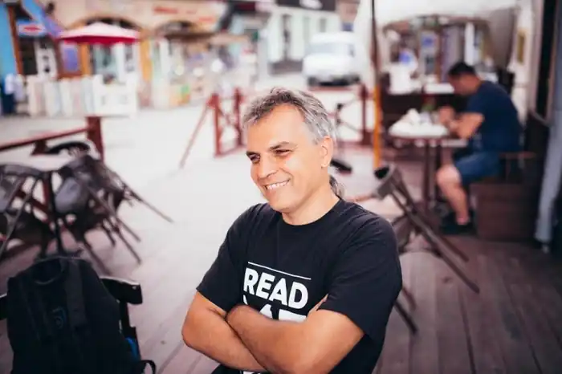

Народився 26 березня 1971 року в Ужгороді. Закінчив факультет журналістики Львівського Національного університету імені Франка. Працює в закарпатських та всеукраїнських ЗМІ.
Має понад тисячу публікацій у пресі.
Член Асоціації українських письменників. Переможець "Коронації слова" 2007 року (ІІ місце) та лауреат 2008 року за п’єси "Ромео і Жасмин" і "В Парижі красне літо…". Автор поетичних збірок "Фалічні знаки" ("Дніпро", 2004), "Тіло лучниці" ("Піраміда", 2006); публіцистичних книжок "Моя р-р-революція" ("Карпатська вежа", 2005), "Закарпатське століття: ХХ інтерв’ю", (Мистецька лінія", 2006); дитячих повістей "Неймовірні пригоди Івана Сили, найдужчої людини світу" ("Видавництво Старого Лева", 2007), "Пригоди тричі славного розбійника Пинті" ("Видавництво Старого Лева", 2008). Упорядник гумористичних альманахів "Карпатський словоблуд" та "Карпатський блудослов". Упорядник публіцистичних дайджестів: "Украдена перемога: хроніка найбрутальніших виборів", "Мукачівська епопея", "Закарпаття: 15 справ УСБУ", "Михайло Заяць —— наша людина в кіно". Також твори друкувалися в часописах "Сучасність", "Київська Русь", "Ї", антології "Біла книга кохання", альманах "Джинсове покоління", "Корзо". Окремі твори перекладені білоруською, словацькою, польською мовами. Засновник і співголова журналістського клубу "НеТаємна вечеря". Автор багатьох творчих проектів. Захоплення – література, історія, культура.